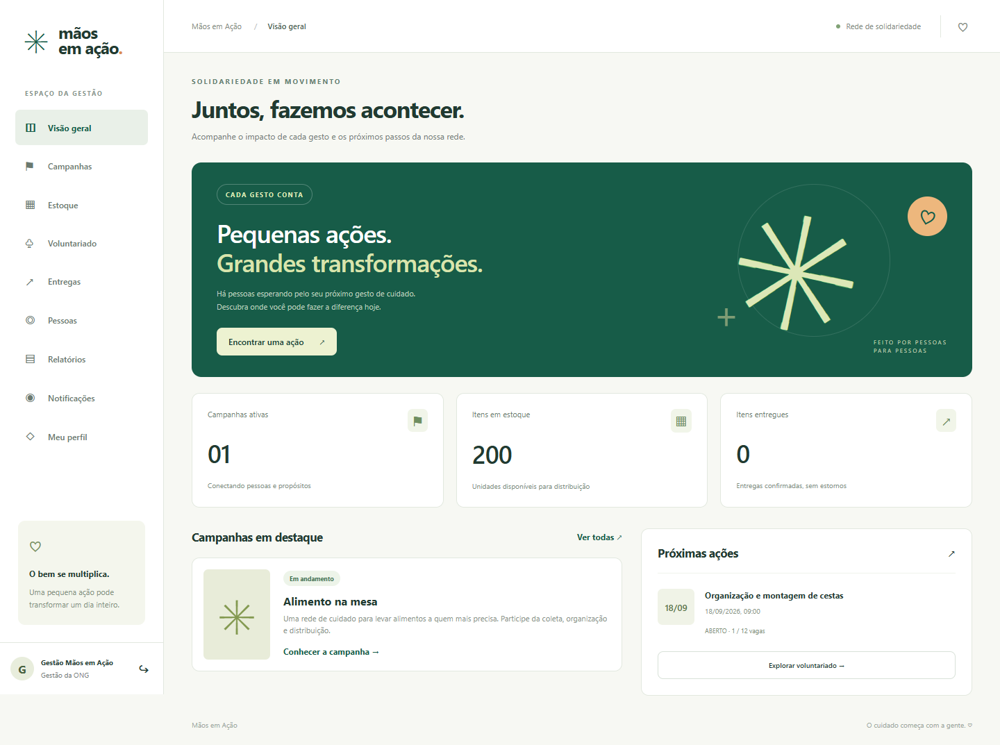

Protótipos de alta fidelidade · capturas da interface Angular executável
Uma visão do impacto da rede de solidariedade.

Para executar formulários e testar os fluxos, inicie a aplicação seguindo FUNCIONALIDADES_E_TESTES.md. Esta galeria apresenta telas estáticas.